Descriptive Statistics in Linguistics
Dr. Jesse Stewart
2026-09-01
1 Introduction
Before we can test a hypothesis, fit a statistical model, or make claims about a larger population, we need to understand the data we actually collected. Descriptive statistics summarize the observations in a dataset. They tell us things such as:
- how many observations we have;
- where values tend to cluster;
- how much the values vary;
- whether a distribution is symmetrical or skewed;
- whether there are unusual observations or outliers; and
- how frequently different categorical outcomes occur.
Descriptive statistics do not tell us whether a pattern is statistically significant or whether it generalizes beyond the sample. That is the job of inferential statistics, which we will cover later in the course. The goal here is simpler but essential: learn how to describe a linguistic dataset accurately before trying to explain it.
In this module, we will:
- distinguish between continuous and categorical data;
- visualize the distribution of a continuous variable with histograms, density plots, and boxplots;
- calculate and interpret the mean, median, quartiles, range, interquartile range, and standard deviation;
- examine skewness, kurtosis, unusual values, and the effect of outliers;
- summarize categorical variables with counts and proportions;
- calculate descriptive statistics for groups within a dataset; and
- practise writing descriptive results in the style of an academic paper.
2 Getting Started in R
We’ll use a Media Lengua formant dataset for the examples in this module. The dataset contains acoustic measurements of vowels along with information about the speaker, vowel, language, and linguistic context.
We’ll work with the following libraries:
library(readxl)
library(readr) #in case you're using a *.csv file.
library(dplyr)
library(ggplot2)
library(gridExtra)
library(fBasics)Open Formant_dataset.xlsx:
dataset <- read_excel("datasets/Formant_dataset.xlsx")
View(dataset)Before doing anything else, inspect the dataset.
dim(dataset)
names(dataset)
head(dataset)dim() tells us the number of rows and columns,
names() shows the variables, and head()
displays the first six rows. These simple checks are useful every time
you open a new dataset.
3 Continuous Data
A continuous variable is numeric and can, in principle, take many values along a scale. Common examples in linguistics include:
Phonetics
- vowel formant frequencies (Hz);
- voice onset time (ms);
- segment duration (ms);
- speech rate;
- reaction time;
- pitch (Hz); and
- intensity (dB).
Non-phonetics
- number of words produced per minute;
- lexical frequency;
- utterance or sentence length;
- reading time;
- fixation duration in eye-tracking studies; and
- scores on language proficiency or acceptability-rating measures.
For our first example, we’ll examine the F1 values of Media Lengua /i/.
i <- subset(dataset, Vowel == "i")
ML_i <- subset(i, Language == "ML")
View(ML_i)How many observations do we have?
nrow(ML_i)3.1 Looking at the Distribution
A single average cannot tell us everything about a dataset. Before calculating summary statistics, it is useful to look at the distribution.
A histogram divides the values into intervals and shows how many observations fall into each interval.
ML_i_hist <- ggplot(ML_i, aes(x = F1)) +
geom_histogram(binwidth = 25, colour = "black", fill = "grey70") +
labs(
title = "Distribution of F1 values in Media Lengua /i/",
x = "F1 frequency (Hz)",
y = "Count"
)
ML_i_hist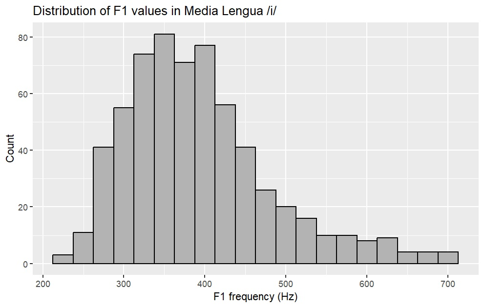
A density plot provides a smoothed representation of the same distribution. It is useful for seeing where observations cluster and whether the distribution is symmetrical, skewed, or has more than one peak.
ML_i_den <- ggplot(ML_i, aes(x = F1)) +
geom_density(alpha = 0.2, fill = "#FF6666") +
labs(
title = "Distribution of F1 values in Media Lengua /i/",
x = "F1 frequency (Hz)",
y = "Density"
)
ML_i_den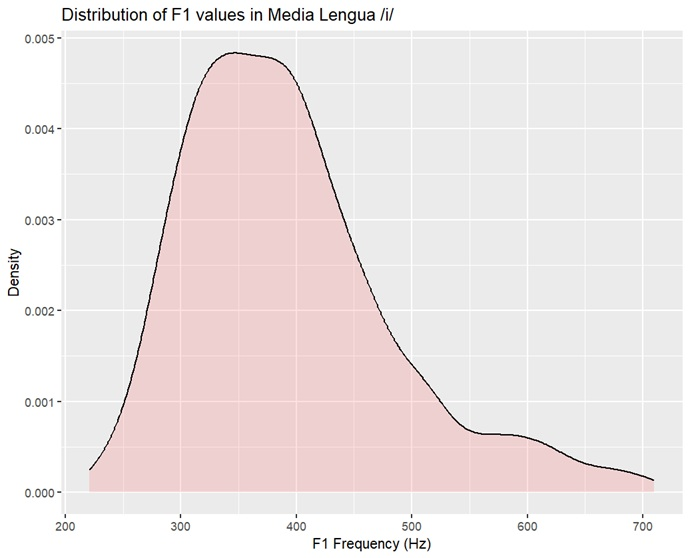
When describing a distribution, pay attention to three broad properties:
- Centre: where are the values concentrated?
- Spread: how widely dispersed are the values?
- Shape: is the distribution symmetrical, skewed, multimodal, or affected by unusual values?
For linguistic data, this distribution looks quite nice 😊.
4 The Median and Quartiles
The median is the middle value of an ordered dataset. Half of the observations fall below it and half fall above it.
We can see this manually by ordering the F1 values:
#Order the F1 values from lowest to highest (decending order)
F1_i_ML_ordered <- sort(ML_i$F1, decreasing = TRUE)
length(F1_i_ML_ordered)
#Convert to a data frame
F1_i_ML_ordered_df=as.data.frame(F1_i_ML_ordered) #convert to a data frame
View(F1_i_ML_ordered_df)
#Find the middle
length(F1_i_ML_ordered)/2

R can calculate the median directly:
median(ML_i$F1, na.rm = TRUE)The median is related to two other useful values:
- First quartile (Q1): 25% of the observations fall below this value.
- Third quartile (Q3): 75% of the observations fall below this value.
Together, Q1 and Q3 define the middle 50% of the data.
quantile(ML_i$F1, probs = c(.25, .50, .75), na.rm = TRUE)
# 25% 50% 75%
#326.30 378.77 436.50 The distance between Q1 and Q3 is called the interquartile range (IQR):
IQR(ML_i$F1, na.rm = TRUE)
#110.2The IQR is useful because it describes the spread of the middle 50% of the observations and is relatively resistant to extreme values. In our data, the IQR for the F1 of /i/ is 110.2 Hz, meaning that the middle 50% of the F1 observations span 110.2 Hz. You can confirm this by subtracting Q3 from Q1.
The range describes the full span of the data, from the minimum to the maximum value. Unlike the IQR, it is highly sensitive to extreme observations.
range(ML_i$F1, na.rm = TRUE)
# 221.00 709.79
diff(range(ML_i$F1, na.rm = TRUE))
# 488.79The range describes the spread of the entire dataset, whereas the IQR describes the spread of the middle 50%.
4.1 Boxplots
A boxplot gives us a visual summary of the median, quartiles, IQR, and potential outliers.
ML_i_box = ggplot(ML_i, aes(x = Vowel, y = F1, fill = Vowel)) +
geom_boxplot() +
stat_summary(fun = mean, geom = "point", shape = 4, size = 2) +
theme(legend.position = "none") +
labs(
title = "Boxplot of F1 values in Media Lengua",
x = "F1 Frequency (Hz)",
y = "Density")
ML_i_box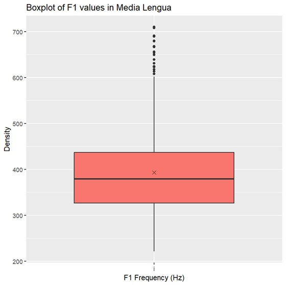
The main parts of a boxplot are:
- the box, which contains the middle 50% of the observations;
- the median, shown by the line inside the box;
- Q1, the lower edge of the box;
- Q3, the upper edge of the box;
- the IQR, calculated as
Q3 - Q1; - the whiskers, which extend to the most extreme observations within 1.5 * IQR of the box; and
- points beyond the whiskers, which are plotted as outliers.
Note: A point beyond a whisker is not automatically a mistake or something that should be removed. It is simply unusual relative to the rest of the distribution and should be investigated.
We can also place a horizontal boxplot above the density plot to compare the numerical summary with the full distribution.
ML_i_box2 <- ggplot(ML_i, aes(x = F1)) +
geom_boxplot(fill = "tomato", alpha = 0.7) +
labs(x = NULL, y = NULL) +
theme(
axis.text.y = element_blank(),
axis.ticks.y = element_blank(),
axis.text.x = element_blank(),
axis.ticks.x = element_blank()
)
ML_i_den2 <- ggplot(ML_i, aes(x = F1)) +
geom_density(alpha = 0.2, fill = "#FF6666") +
labs(
x = "F1 frequency (Hz)",
y = NULL
) +
theme(
axis.text.y = element_blank(),
axis.ticks.y = element_blank()
)
grid.arrange(ML_i_box2, ML_i_den2, ncol = 1, heights = c(1, 3))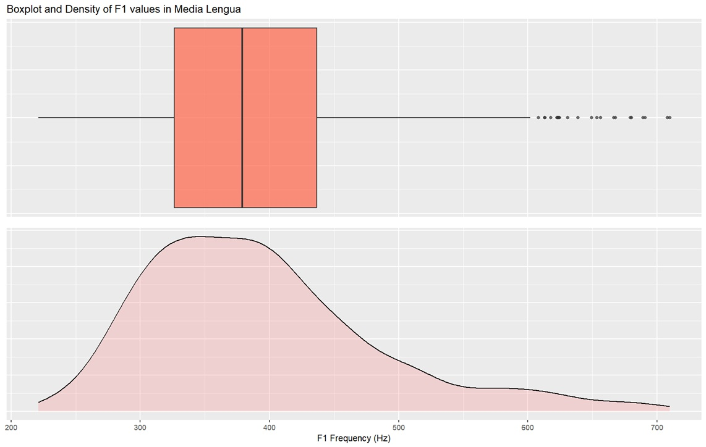
R’s summary() function gives us several of these
descriptive statistics at once:
summary(ML_i$F1)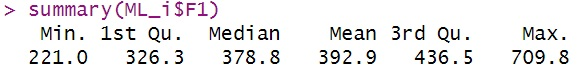
Everything in the summary() output can be related back
to the boxplot and density plot. The median and quartiles line up with
the bulkiest part of the distribution, the whiskers extend into the
tails, and the outlying points fall beyond the whiskers.

5 The Mean and Standard Deviation
The mean is calculated by adding all values together and dividing by the number of observations.
sum(ML_i$F1, na.rm = TRUE)
length(na.omit(ML_i$F1))
sum(ML_i$F1, na.rm = TRUE)/length(na.omit(ML_i$F1))
mean(ML_i$F1, na.rm = TRUE)The standard deviation (SD) describes how dispersed the observations are around the mean. A smaller SD means the values are relatively tightly clustered around the mean; a larger SD means they are more widely spread.
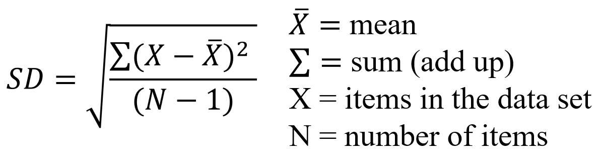
sqrt(sum((ML_i$F1-398.1)^2)/(621-1))
#90.22337
sd(ML_i$F1)
#90.22337We can calculate the mean and standard deviation together:
ML_i %>%
summarise(
n = sum(!is.na(F1)),
mean = mean(F1, na.rm = TRUE),
sd = sd(F1, na.rm = TRUE),
median = median(F1, na.rm = TRUE),
min = min(F1, na.rm = TRUE),
max = max(F1, na.rm = TRUE),
IQR = IQR(F1, na.rm = TRUE)
)For a distribution that is approximately normal, the familiar 68–95–99.7 rule gives a useful interpretation of the SD:
- about 68% of observations fall within ±1 SD of the mean;
- about 95% fall within ±2 SD; and
- about 99.7% fall within ±3 SD.
This rule applies to approximately normal distributions; it should not be treated as a universal property of all datasets.
We can display the mean and ±1 and ±2 SD on the density plot:
mi=mean(ML_i$F1)
sdi=sd(ML_i$F1)
meani = ggplot(ML_i, aes(x=F1)) +
geom_density(alpha=.2, fill="#FF6666") +
theme(axis.title.y=element_blank(), axis.text.y=element_blank(),legend.position="none") +
geom_vline(xintercept=mi,color="red", linetype="dashed", size=1)+geom_vline(xintercept=mi+sdi, linetype = "longdash", color="blue")+geom_vline(xintercept=mi-sdi, linetype = "longdash", color="blue") +
geom_vline(xintercept=mi+(sdi*2), linetype = "longdash", color="purple")+ geom_vline(xintercept=mi-(sdi*2), linetype = "longdash", color="purple")
meani
grid.arrange(ML_i_box2, ML_i_den2, meani, ncol = 1)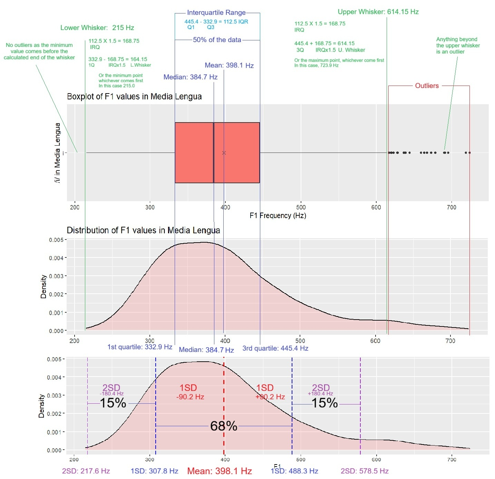
6 Mean vs. Median
The mean and median both describe the centre of a distribution, but they respond differently to extreme values.
The mean uses the value of every observation, so unusually high or low values can pull it in their direction. The median depends only on the ordered middle of the dataset and is therefore much less sensitive to extremes.
Consider a simplified income example:
MvM=c(50000,50000,50000,50000,50000,50000,50000,50000,50000,50000,40000,40000,40000,40000,40000,40000,40000,40000,60000,60000,60000,60000,60000,60000,60000,60000,30000,30000,30000,30000,30000,30000,70000,70000,70000,70000,70000,70000,20000,20000,20000,20000,80000,80000,80000,80000,10000,10000,90000,90000,7000,100000,50000,50000,50000,50000,50000,50000,50000,50000,50000,50000,40000,40000,40000,40000,40000,40000,40000,40000,60000,60000,60000,60000,60000,60000,60000,60000,30000,30000,30000,30000,30000,30000,70000,70000,70000,70000,70000,70000,20000,20000,20000,20000,80000,80000,80000,80000,10000,10000,90000,90000,7000,100000,50000,50000,50000,50000,50000,50000,50000,50000,50000,50000,40000,40000,40000,40000,40000,40000,40000,40000,60000,60000,60000,60000,60000,60000,60000,60000,30000,30000,30000,30000,30000,30000,70000,70000,70000,70000,70000,70000,20000,20000,20000,20000,80000,80000,80000,80000,10000,10000,90000,90000,7000,100000,50000,50000,50000,50000,50000,50000,50000,50000,50000,50000,40000,40000,40000,40000,40000,40000,40000,40000,60000,60000,60000,60000,60000,60000,60000,60000,30000,30000,30000,30000,30000,30000,70000,70000,70000,70000,70000,70000,20000,20000,20000,20000,80000,80000,80000,80000,10000,10000,90000,90000,7000,100000,50000,50000,50000,50000,50000,50000,50000,50000,50000,50000,40000,40000,40000,40000,40000,40000,40000,40000,60000,60000,60000,60000,60000,60000,60000,60000,30000,30000,30000,30000,30000,30000,70000,70000,70000,70000,70000,70000,20000,20000,20000,20000,80000,80000,80000,80000,10000,10000,90000,90000,7000,50000,50000,50000,50000,50000,50000,50000,50000,50000,50000,40000,40000,40000,40000,40000,40000,40000,40000,60000,60000,60000,60000,60000,60000,60000,60000,30000,30000,30000,30000,30000,30000,70000,70000,70000,70000,70000,70000,20000,20000,20000,20000,80000,80000,80000,80000,10000,10000,90000,90000,7000,100000,50000,50000,50000,50000,50000,50000,50000,50000,50000,50000,40000,40000,40000,40000,40000,40000,40000,40000,60000,60000,60000,60000,60000,60000,60000,60000,30000,30000,30000,30000,30000,30000,70000,70000,70000,70000,70000,70000,20000,20000,20000,20000,80000,80000,80000,80000,10000,10000,90000,90000,7000,100000,50000,50000,50000,50000,50000,50000,50000,50000,50000,50000,40000,40000,40000,40000,40000,40000,40000,40000,60000,60000,60000,60000,60000,60000,60000,60000,30000,30000,30000,30000,30000,30000,70000,70000,70000,70000,70000,70000,20000,20000,20000,20000,80000,80000,80000,80000,10000,10000,90000,90000,7000,100000,50000,50000,50000,50000,50000,50000,50000,50000,50000,50000,40000,40000,40000,40000,40000,40000,40000,40000,60000,60000,60000,60000,60000,60000,60000,60000,30000,30000,30000,30000,30000,30000,70000,70000,70000,70000,70000,70000,20000,20000,20000,20000,80000,80000,80000,80000,10000,10000,90000,90000,7000,100000,50000,50000,50000,50000,50000,50000,50000,50000,50000,50000,40000,40000,40000,40000,40000,40000,40000,40000,60000,60000,60000,60000,60000,60000,60000,60000,30000,30000,30000,30000,30000,30000,70000,70000,70000,70000,70000,70000,20000,20000,20000,20000,80000,80000,80000,80000,10000,10000,90000,90000,7000,500000,400000,250000,600000,100000,600000,800000,100000,1000000,1000000,1000000,100000,1000000,1000000,1000000)
MvM=as.data.frame(MvM)
perM <- mean(MvM$MvM)
perMed <- median(MvM$MvM)
NormData <- ggplot(MvM, aes(x = MvM)) +
geom_histogram(binwidth = 10000, fill = "grey70", color = "black") +
geom_vline(xintercept = perM, color = "red", linetype = "dotted", size = 1) +
geom_vline(xintercept = perMed, color = "blue", linetype = "solid", size = 1) +
labs(
title = "Income gap",
x = "Income",
y = "Count"
)
NormData
mean(MvM$MvM)
# 66266.42
median(MvM$MvM)
# 50000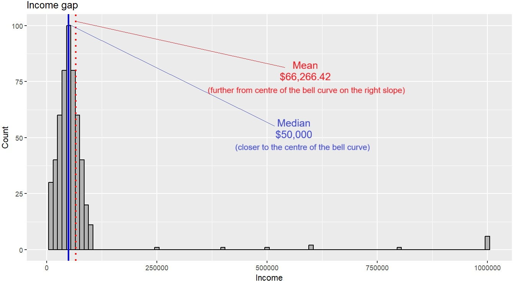
The very high income pulls the mean upward, while the median remains near the centre of the majority of observations. This is why medians are often reported for strongly skewed variables.
There is no rule that the mean is “better” than the median or vice versa. The appropriate summary depends on the distribution and on what you want the statistic to represent.
7 Transforming Skewed Variables
Sometimes a variable is so strongly skewed that it is worth trying a transformation. This is common with strictly positive measurements such as durations, reaction times, formant values, or variables like income. Transformations do not “fix” bad data, but they can sometimes make a distribution easier to summarize and can improve the behaviour of a later statistical model.
Three common strategies are:
- log transformation: strongly compresses the upper tail;
- square-root transformation: also reduces right skew, but more gently; and
- z-standardization: rescales a variable to have mean 0 and SD 1, but does not remove skewness by itself.
Here is a simple illustration using the income data above:
#Log
MvM$F1log <- log(MvM$MvM)
perM <- mean(MvM$F1log)
perMed <- median(MvM$F1log)
logIncome <- ggplot(MvM, aes(x = F1log)) +
geom_histogram(binwidth = 0.2, fill = "grey70", color = "black") +
geom_vline(xintercept = perM, color = "red", linetype = "dotted", size = 1) +
geom_vline(xintercept = perMed, color = "blue", linetype = "solid", size = 1) +
labs(
title = "Income gap",
x = "Income",
y = "Count"
)
logIncome
#Sqrt
MvM$F1sqrt <- sqrt(MvM$MvM)
perM <- mean(MvM$F1sqrt)
perMed <- median(MvM$F1sqrt)
sqrtIncome <- ggplot(MvM, aes(x = F1sqrt)) +
geom_histogram(binwidth = 20, fill = "grey70", color = "black") +
geom_vline(xintercept = perM, color = "red", linetype = "dotted", size = 1) +
geom_vline(xintercept = perMed, color = "blue", linetype = "solid", size = 1) +
labs(
title = "Income gap",
x = "Income",
y = "Count"
)
sqrtIncome
grid.arrange(NormData,sqrtIncome,logIncome, ncol = 1)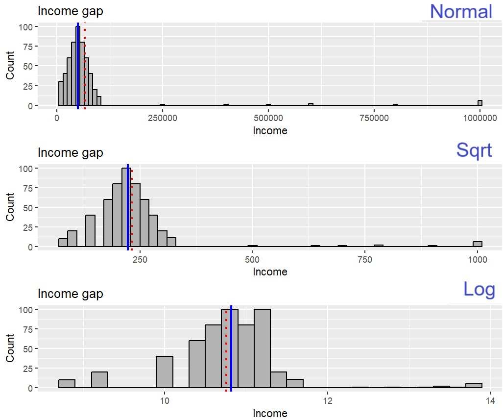
A log transformation pulls large values inward quite strongly, so it is often useful when a few very large observations dominate the upper tail. A square-root transformation also reduces right skew, but less aggressively, so it preserves more of the spacing among larger values. In practice, both are common in linguistics, especially for duration and reaction-time data.
Do not transform a variable automatically just because its skewness or kurtosis exceeds a rule-of-thumb cutoff. In a linear model, what matters most is whether the modelling assumptions are reasonable for the residuals and whether the transformed scale is interpretable for the question you are asking.
8 Shape of a Distribution
Descriptive statistics are most informative when paired with a graph. Two datasets can have the same mean and SD but quite different distributions.
8.1 Skewness
A distribution is skewed when one tail extends farther than the other. Skewness gives us a numerical description of this asymmetry.
- Positive (right) skew: the long tail extends toward higher values.
- Negative (left) skew: the long tail extends toward lower values.
- A skewness value near 0 indicates a roughly symmetrical distribution.
The farther the value is from 0, the more asymmetrical the distribution is. As a rough descriptive guideline, values beyond about +1 or -1 indicate fairly substantial skew. This is a useful warning sign, not a hard rule that determines whether a statistical analysis is permitted.
8.2 Kurtosis
Kurtosis describes how strongly observations are concentrated in the centre and, especially, in the tails of a distribution relative to a normal distribution. When excess kurtosis is reported, a normal distribution has a value of approximately 0.
- Positive kurtosis: heavier tails and more extreme observations than a normal distribution; the centre may also appear more sharply peaked.
- Negative kurtosis: lighter tails and a flatter distribution.
- Kurtosis near 0: broadly similar tail behaviour to a normal distribution.
Like skewness, kurtosis is best interpreted together with a graph rather than as a pass/fail test.
Click here to reveal the r code for the graphs:
library(ggplot2)
library(fBasics)
perfect=c(5,5,5,5,5,5,5,5,5,5,4,4,4,4,4,4,4,4,6,6,6,6,6,6,6,6,3,3,3,3,3,3,7,7,7,7,7,7,2,2,2,2,8,8,8,8,1,1,9,9,0,10)
perfect=as.data.frame(perfect)
perfBox <- ggplot(perfect, aes(x=perfect)) +
geom_boxplot() +
labs (
title = "Perfect plot"
)
perfDen <- ggplot(perfect, aes(x = perfect)) +
geom_histogram(aes(y = ..density..), binwidth = 1, colour = "black", fill = "white") +
geom_density(alpha = .2, fill = "#FF6666") +
labs(x = NULL, y = NULL)
perfGrid <- grid.arrange(perfBox,perfDen, ncol=1)
pos=c(5,5,5,5,5,5,5,5,5,5,4,4,4,4,4,4,4,4,4,4,4,4,4,4,4,6,6,6,6,6,6,6,6,3,3,3,3,3,3,3,3,3,3,3,3,3,3,3,3,3,3,3,3,3,7,7,7,7,7,7,3,3,3,2,2,2,2,2,2,2,2,2,2,2,2,2,2,2,2,2,2,2,2,2,2,2,2,2,2,2,2,2,2,2,8,8,8,8,1,1,1,1,1,1,1,1,1,1,1,1,1,1,1,1,1,1,1,1,1,1,1,1,9,9,0,0,0,0,0,0,0,0,0,10)
pos=as.data.frame(pos)
posBox <- ggplot(pos, aes(x=pos)) +
geom_boxplot() +
labs (
title = "Positive Skewness"
)
posDen <- ggplot(pos, aes(x = pos)) +
geom_histogram(aes(y = ..density..), binwidth = 1, colour = "black", fill = "white") +
geom_density(alpha = .2, fill = "#FF6666") +
labs(x = NULL, y = NULL)
posGrid <- grid.arrange(posBox,posDen, ncol=1)
neg=c(8,8,8,8,8,8,8,8,8,8,8,8,8,8,8,8,8,8,8,8,8,8,8,8,8,8,8,8,7,7,7,7,7,7,7,7,7,7,7,7,7,7,7,7,7,7,6,6,6,6,6,6,6,6,6,6,6,6,6,9,9,9,9,9,9,9,9,9,9,9,9,9,9,9,9,9,9,9,10,10,10,10,1,1,0,2,2,2,3,3,3,4,4,4,4,4,4,5,5,5,5,5,5,5,5,5,5)
neg=as.data.frame(neg)
negBox <- ggplot(neg, aes(x = neg)) +
geom_boxplot() +
labs (
title = "Negative Skewness"
)
negDen <- ggplot(neg, aes(x = neg)) +
geom_histogram(aes(y = ..density..), binwidth = 1, colour = "black", fill = "white") +
geom_density(alpha = .2, fill = "#FF6666") +
labs(x = NULL, y = NULL)
negGrid <- grid.arrange(negBox,negDen, ncol=1)
Pkurtosis=c(5,5,5,5,5,5,5,5,5,5,5,5,5,5,5,5,5,5,5,5,5,5,5,5,5,5,5,5,5,5,4,4,4,4,4,4,4,3,3,3,3,2,2,2,1,0,6,6,6,6,6,7,7,7,7,8,8,9,9,10)
Pkurtosis=as.data.frame(Pkurtosis)
posKBox <- ggplot(Pkurtosis, aes(x = Pkurtosis)) +
geom_boxplot() +
labs (
title = "Positive Kurtosis"
)
posKDen <- ggplot(Pkurtosis, aes(x = Pkurtosis)) +
geom_histogram(aes(y = ..density..), binwidth = 1, colour = "black", fill = "white") +
geom_density(alpha = .2, fill = "#FF6666") +
labs(x = NULL, y = NULL)
posKGrid <- grid.arrange(posKBox,posKDen, ncol=1)
Nkurtosis=c(4,4,4,4,4,4,4,4,4,4,5,5,5,5,5,5,5,5,5,5,5,6,6,6,6,6,6,6,6,6,6,3,3,3,3,3,3,3,3,3,7,7,7,7,7,7,7,7,7,2,2,2,2,2,2,8,8,8,8,8,8,8,8,1,1,1,1,1,0,0,9,9,9,10,10)
Nkurtosis=as.data.frame(Nkurtosis)
negKBox <- ggplot(Nkurtosis, aes(x = Nkurtosis)) +
geom_boxplot() +
labs (
title = "Negative Kurtosis"
)
negKDen <- ggplot(Nkurtosis, aes(x = Nkurtosis)) +
geom_histogram(aes(y = ..density..), binwidth = 1, colour = "black", fill = "white") +
geom_density(alpha = .2, fill = "#FF6666") +
labs(x = NULL, y = NULL)
negKGrid <- grid.arrange(negKBox,negKDen, ncol=1)
grid.arrange(perfGrid,posGrid, negGrid, perfGrid, posKGrid, negKGrid, ncol=3)
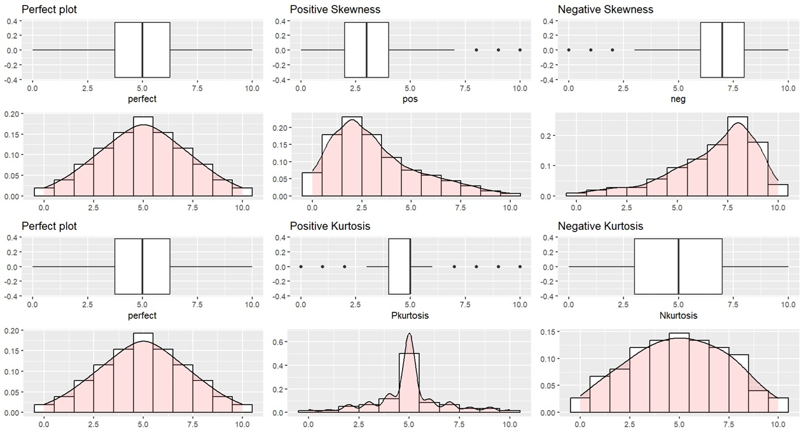
We can calculate both values in R with the skewness()
and kurtosis() functions from the fBasics
package:
skewness(ML_i$F1, na.rm = TRUE)
# 0.9934553
# attr(,"method")
# "moment"
kurtosis(ML_i$F1, na.rm = TRUE)
# 0.9623642
# attr(,"method")
# "excess"For both measures, values farther from 0 indicate a greater departure from a symmetrical, normally shaped distribution. A common rule of thumb treats values outside approximately -1 to +1 as worth investigating carefully.
Do not, however, automatically transform or discard data because skewness or kurtosis exceeds a particular cutoff. First inspect the distribution and determine why it has that shape. In regression modelling, assumptions are also evaluated from the model and its residuals, not simply from the raw dependent variable.
8.3 Multiple Peaks
A distribution may also be bimodal or multimodal, meaning that it contains two or more distinct peaks. In linguistic data, this can be informative. Multiple peaks may indicate different speaker groups, linguistic categories, recording conditions, or other structure that has been combined in a single distribution.
Click here to reveal the r code for the graphs:
library(ggplot2)
set.seed(123)
# Subtle bimodal distribution
bimodal <- data.frame(
x = c(
rnorm(600, mean = 300, sd = 55),
rnorm(400, mean = 450, sd = 50)
)
)
bim=ggplot(bimodal, aes(x = x)) +
geom_density(alpha = 0.3, fill = "grey70") +
labs(
title = "Possible Bimodal Distribution",
x = "Value",
y = "Density"
)
set.seed(123)
multimodal <- data.frame(
x = c(
rnorm(500, mean = 280, sd = 50),
rnorm(350, mean = 420, sd = 45),
rnorm(250, mean = 600, sd = 50)
)
)
multim=ggplot(multimodal, aes(x = x)) +
geom_density(alpha = 0.3, fill = "grey70") +
labs(
title = "Possible Multimodal Distribution",
x = "Value",
y = "Density"
)
grid.arrange(bim, multim, ncol=2)
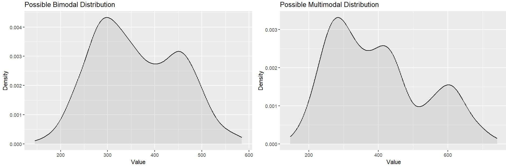
8.4 Outliers
An outlier is an observation that lies unusually far from the rest of the data. Outliers can arise for many reasons:
- measurement or transcription errors;
- miscoding;
- equipment problems;
- an unusual speaker or lexical item; or
- genuine linguistic variation.
Do not automatically delete an observation because a boxplot labels it as an outlier. First determine why it is unusual. A real observation is still data.
9 Categorical Data
Not all linguistic variables are continuous. Many of the outcomes we study are categorical:
- OV vs. VO word order;
- overt vs. null subject;
- [f] vs. [ɸ];
- presence vs. absence of a segment;
- noun, verb, adjective, or adverb; and
- language or dialect category.
For categorical variables, means and standard deviations are usually not useful. Instead, we describe the data using counts and proportions.
Let’s look at vowel counts in the Media Lengua portion of the dataset.
ML <- subset(dataset, Language == "ML")
ML %>%
count(Vowel)
# A tibble: 5 × 2
# Vowel n
# <chr> <int>
#1 a 645
#2 e 329
#3 i 621
#4 o 318
#5 u 601To convert counts into proportions:
ML %>%
count(Vowel) %>%
mutate(
proportion = n / sum(n),
percent = proportion * 100
)
# A tibble: 5 × 4
# Vowel n proportion percent
# <chr> <int> <dbl> <dbl>
#1 a 645 0.257 25.7
#2 e 329 0.131 13.1
#3 i 621 0.247 24.7
#4 o 318 0.126 12.6
#5 u 601 0.239 23.9We can visualize those counts with a bar plot:
ggplot(ML, aes(x = Vowel, fill=Vowel)) +
geom_bar() +
labs(
title = "Vowel tokens in the Media Lengua dataset",
x = "Vowel",
y = "Number of tokens"
)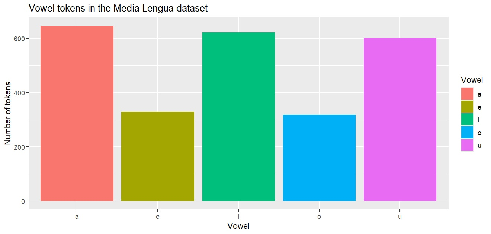
For a binary variable, it is often useful to report both the raw
count and percentage. For example, if Stress is coded as
two categories:
Stress_summary <- ML %>%
count(Stress) %>%
mutate(
proportion = n / sum(n),
percent = round(proportion * 100, 1)
)
Stress_summary
# A tibble: 2 × 4
# Stress n proportion percent
# <chr> <int> <dbl> <dbl>
#1 NonStressed 1706 0.679 67.9
#2 Stressed 808 0.321 32.1
ggplot(Stress_summary, aes(x = Stress, y = percent, fill = Stress)) +
geom_col() +
geom_text(aes(label = paste0(percent, "%")), vjust = -0.5) +
labs(
title = "Distribution of Stress",
x = "Stress",
y = "Percent"
) +
theme(legend.position = "none")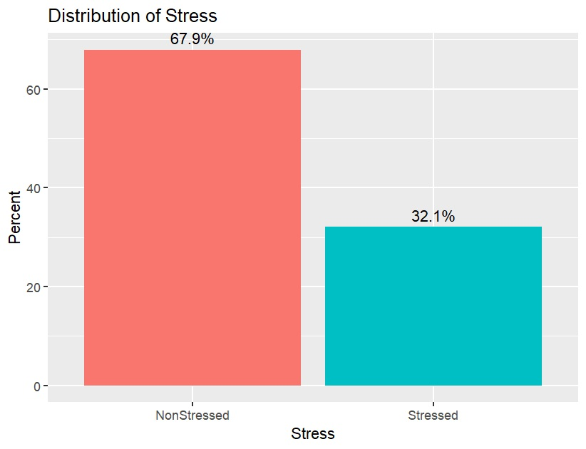
This same approach will be useful later when describing variables such as OV vs. VO. Before fitting any statistical model, you should know how many tokens occur in each category and what percentage of the dataset they represent.
10 Describing Groups
Often we want descriptive statistics for more than one group. For example, rather than reporting one F1 mean for the entire dataset, we can calculate the mean and SD separately for each vowel.
ML %>%
group_by(Vowel) %>%
summarise(
n = sum(!is.na(F1)),
mean_F1 = mean(F1, na.rm = TRUE),
sd_F1 = sd(F1, na.rm = TRUE),
median_F1 = median(F1, na.rm = TRUE),
IQR_F1 = IQR(F1, na.rm = TRUE)
)The corresponding boxplot lets us compare both centre and spread across vowels:
ggplot(ML, aes(x = Vowel, y = F1, fill=Vowel)) +
geom_boxplot() +
labs(
title = "F1 by vowel in Media Lengua",
x = "Vowel",
y = "F1 frequency (Hz)"
)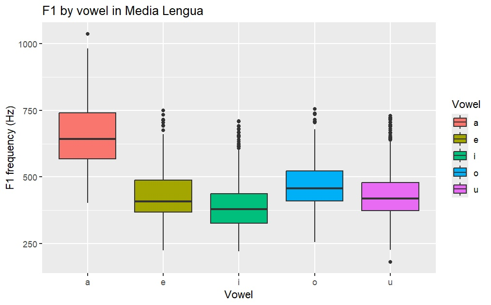
A useful principle is: Describe the same grouping structure that matters for your research question.
If your question compares two speaker groups, report descriptive statistics for those groups. If it compares two linguistic variants, report the counts or measurements for those variants. A single overall mean can hide important differences among groups.
11 Choosing What to Report
For a continuous variable, a basic descriptive summary will often include:
- number of observations (
n); - mean and SD;
- median and IQR when the distribution is skewed or when these values are substantively useful;
- minimum and maximum where relevant; and
- an appropriate graph, such as a histogram, density plot, boxplot, or scatterplot.
For a categorical variable, a basic descriptive summary will usually include:
- number of observations in each category;
- proportions or percentages; and
- a bar plot or another appropriate categorical visualization.
Do not report every statistic simply because R can calculate it. Report the statistics that help the reader understand the data and answer the research question.
12 Writing Descriptive Results
Descriptive statistics should be reported in prose as well as tables and figures. The goal is to tell the reader what the data look like before moving to inferential analysis.
For a continuous outcome, a results paragraph might look like this:
Figure X shows a clear separation between /a/ and the other Media Lengua vowels. /a/ has the highest F1 values (median = 643.2 Hz; mean = 656.8 Hz), while /i/ has the lowest (median = 378.8 Hz; mean = 392.9 Hz). The mid and high vowels overlap considerably, with median F1 values of 455.9 Hz for /o/, 418.8 Hz for /u/, and 408.4 Hz for /e/. Overall, the descriptive pattern distinguishes the low vowel /a/ from the remaining vowels much more strongly than it separates the non-low vowels from one another.
For a categorical outcome:
Figure X shows that non-stressed tokens are more frequent than stressed tokens in the Media Lengua dataset. Non-stressed observations account for 67.9% of the data, compared with 32.1% for stressed observations. Thus, although both categories are well represented, the distribution is weighted toward non-stressed tokens.
Notice that these statements describe the sample. They do not say that one group is “significantly” different from another. Statistical significance belongs to inferential analysis.
13 Summary
Before moving to inferential statistics, you should be able to answer the following questions about your dataset:
- How many observations are there?
- What type of variable am I describing: continuous or categorical?
- For continuous data, what are the centre and spread of the distribution?
- Is the distribution symmetrical, skewed, multimodal, or affected by unusual observations?
- For categorical data, how many observations occur in each category and what are their proportions?
- Do the descriptive statistics need to be calculated separately for meaningful groups?
- What graph best communicates the structure of the data?
Descriptive statistics are not a preliminary nuisance to get through before the “real” analysis. They are the first analysis of the data. If you do not understand the distributions, group sizes, and unusual observations in your dataset, you are not yet ready to model it.